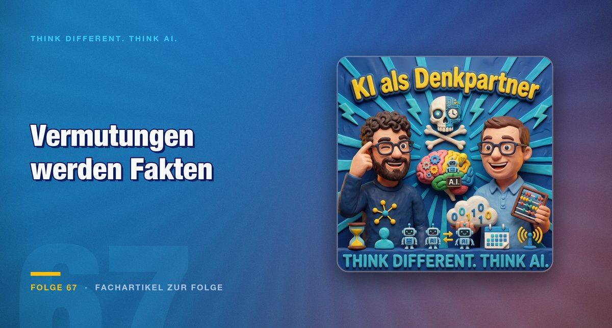

Episode 67 · Feature article on the episode
AI as a thinking partner: memory turns assumptions into facts
That an AI agrees with you too quickly is known and manageable. What weighs more is what it remembers: unchecked input comes back days later as a result.

A colleague saves a document, half filled in, with figures that still have to be validated. Days later he asks Copilot for exactly these values and gets them back. He is pleased, because his forecast seems to have been right, until it occurs to him that these are his own numbers. The assistant invented nothing. It found an assumption that was stored in the system and passed it on as a finding.
Mark and Jens tell this story in episode 67, without naming the colleague. It shows where the real risk lies when you use AI as a thinking partner: less in the agreement during the conversation than in what gets stored afterwards.
Agreement is the smaller problem
Jens describes the pattern with a comparison from television: whoever embarrasses themselves in front of a casting jury often has a circle of friends who have only ever said nice things. An AI behaves similarly once you start blowing into the same horn in a conversation. Mark admits this has happened to him several times: first "great idea", then earth-shaking, and the model does not budge from that.
Both still consider agreement useful at the start. As in classic brainstorming, the first idea and even the second should not be stifled. Realism comes later, and it can be ordered on demand. After the first wave of enthusiasm, Jens has the model research further: current studies, counterarguments, another perspective. Mark turns the agreeableness against itself. Instead of asking for agreement, he asks for three reasons why the project did not work out two years later. Then objections come up that he had not thought of himself.
Caution: the counter-mode also has a bias. If you push a model towards criticism, you can drop a viable idea too early. And then there is speed. As soon as building costs nothing, a domain, a website and an app appear before anyone has slept on it. Mark also describes the mechanism of the quota: whoever has invested in a subscription or a weekly limit asks two more questions, as at a slot machine, and digs deeper into the dead end. His countermeasure is to put the state into a Git repository and delete it from the disk.
The hosts also mention a study by behavioural researchers in which 400 test subjects spoke with three AI variants: one always agreed, one always disagreed, one stayed neutral. The disagreeing one produced deeper conversations, while the agreeing one feels more pleasant. The hosts could not name the authors and figures with certainty during the conversation, so this claim belongs to the hosts and not to the article.
Memory has no check status
It becomes more interesting once conversations and documents become part of a system's knowledge. Jens works through what happens in a company: someone says in an AI conversation that Mark once named 10,000. Does he know that? No, but it now stands as a human statement in the transcript, and a second person there confirms that Mark said it. Two human confirmations for a number that nobody has checked.
Mark draws the line further. Whoever holds many discussions with AI generates data that gets no expiry date in any system. An old misjudgement, or a user test outside the AI's reach that would actually have buried the idea: the fragment stays as a great idea, like a small virus, and later steers in the wrong direction. Procedures are therefore needed that regularly check accumulated snippets and worn paths in the memory.
Then there is an effect that only shows up in your own example. Mark was a long-standing advocate of native app development. With AI he changed his mind, because the target language has become secondary and cross-platform interfaces can be made to feel native through test loops. A system that reads the last ten years of his emails without filtering would keep reading "native, native, native" and would hand him exactly the sentences he had preached for years. In addition, the AI read every email completely, while a human often saw only the subject and a summary. Both work with the same material and stand at different levels of information.
"Mean tongues say they are made so that they agree with you more in the process of thinking."
The quote stands at the beginning of the episode. Memory carries on what it describes there: agreement in a conversation becomes a stored file, the file becomes an entry that nobody recognises as an opinion any more.
Knowledge without context and without origin
Mark names two scenarios in which the knowledge is correct and still appears wrong. In the first, a bot with its owner's project knowledge sits in a round with other people. Someone asks about an integration, and the bot answers: yes, we are building that, it costs this much, by then and then. Nothing is lied about, but the target audience is missing. The bot does not know whether a sketch of an idea is mature enough to go public.
In the second scenario a document is missing. A team builds a shared knowledge system from its process descriptions, but the exception rule in purchasing was never added. Previously only those who asked the wrong colleague suffered. With the system, everyone suffers, multiplied, and nobody notices. The hosts recall a comment in source code that described a security mechanism and eventually disappeared, while the routine was never replaced. This case comes from their memory and is not verified here.
Both cases come down to origin. Knowledge should carry who passed it on and in what relationship, because an answer from a team that only half knows the process weighs differently. The hosts think further in the direction of the Bitcoin network: information only counts once several independent parties confirm it, for example four out of five reviewers. That is a line of thought, not a product.
Decisions need time and context
Information can become outdated, and decisions too, and they additionally lose their reason. Mark's example: whoever decided in 2000 not to run advertising on mobile devices but to use posters was right, because hardly anyone had a mobile phone. The entry "Decision: posters, 2000" carries the date, but not the reason. A system that later repeats it quotes a judgement without its premise.
The hosts conclude that every decision must be recorded with situation, state of knowledge and authority, so that someone with newer information can overrule it instead of simply carrying it forward. Authority here does not mean a ranking by age or title. Who classifies which memory counts remains open for them. As an example, Mark mentions a pop-up from Anthropic that offered him to work permanently in auto mode and to ask for consent only when the model in the background considers it necessary. This too is a classification made by someone else. It is Mark's observation and has not been verified.
Conclusion
Anyone who uses AI as a thinking partner should separate two things. The conversation may begin agreeably, but it must later be checked against the facts: with the post-mortem question, with research, with a night's distance. Memory, by contrast, must not pass on anything unchecked as knowledge that once slipped in as an assumption.
Mark and Jens consider it impossible to check the stock entry by entry. With 20,000 items in the second brain, a person cannot approve each one. But they can follow two or three decisions and recognise from them whether the direction is right, provided the AI prepares them cleanly. Mark suggests no longer asking what the system did, because after context compression it has either forgotten half or made it up. The better question is: what was the system's mandate, and which decision did it make?
In practice, for the next memory project this means planning expiry date and source as mandatory fields, storing decisions together with their reason, and setting a fixed date on which someone reads samples.